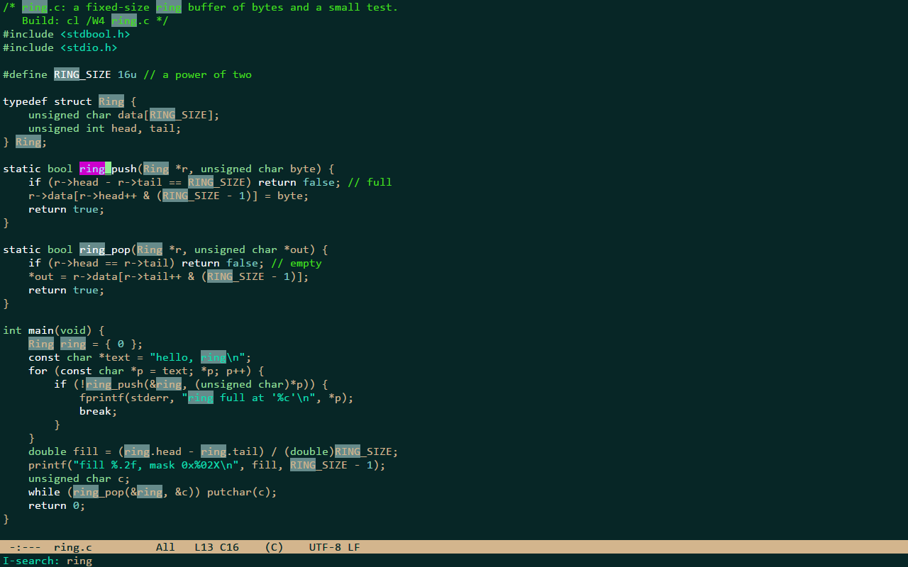
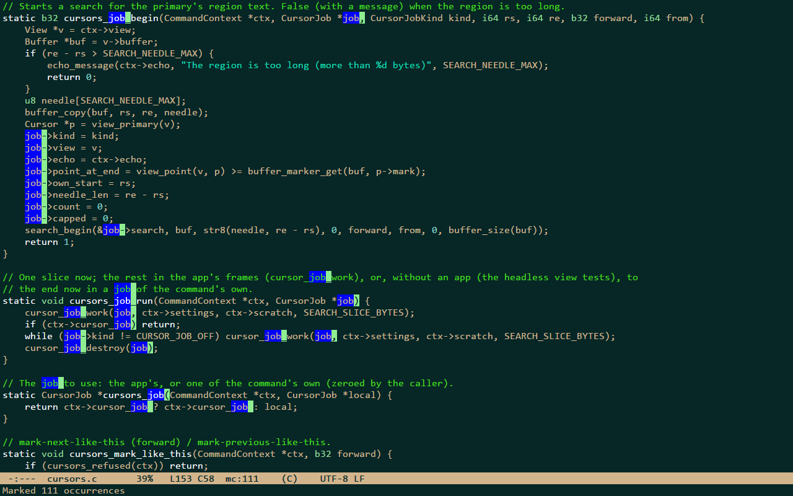

Editing
Moving
| keys | command | what it does |
|---|---|---|
C-f C-b | forward-char backward-char | a character forward or back (or the arrows) |
C-n C-p | next-line previous-line | a line down or up |
C-a C-e | move-beginning-of-line move-end-of-line | the beginning or the end of the line |
M-f M-b | forward-word backward-word | a word forward or back (or Ctrl with the arrows) |
M-} M-{ | forward-paragraph backward-paragraph | a paragraph forward or back |
M-< M-> | beginning-of-buffer end-of-buffer | the beginning or the end of the buffer |
C-v M-v | scroll-up-command scroll-down-command | a screen forward or back (or Page Down and Page Up) |
C-l | recenter-top-bottom | point's line to the middle, the top, then the bottom |
M-g g | goto-line | a line by its number, and a column after a colon |
Point and mark
The cursor is point. C-SPC sets the mark there, and the text between point and the mark is the region. While the
mark is active the region is highlighted and the region commands act on it (transient_mark_mode); Shift with a
motion key selects too. Typing inserts at point even with an active region unless delete_selection_mode is true;
DEL and C-d delete an active region either way.
| keys | command | what it does |
|---|---|---|
C-SPC | set-mark-command | set the mark at point and activate it |
C-x C-x | exchange-point-and-mark | exchange point and the mark |
C-x h | mark-whole-buffer | mark the whole buffer as the region |
Killing and yanking
Killing is cutting and yanking is pasting. The kills are kept for yanking (kill_ring_max of them), and every kill
also goes to the Windows clipboard; C-y takes the clipboard when another program changed it since.
| keys | command | what it does |
|---|---|---|
C-w M-w | kill-region kill-ring-save | cut or copy the region |
C-k | kill-line | kill to the end of the line |
M-d M-DEL | kill-word backward-kill-word | kill a word forward or back |
C-S-DEL | kill-whole-line | kill the whole line, its newline included |
C-y | yank | paste the last kill |
M-y | yank-pop | right after a yank, replace it with an older kill |
Undo
C-/ undoes, and repeated it goes further back; after any other command it first undoes the undos, as in Emacs. C-?
(undo-redo) goes forward again. The history kept per buffer is undo_limit_mb megabytes: the oldest changes are
dropped first, and the last command can always be undone.
| keys | command | what it does |
|---|---|---|
C-/ C-x u | undo | undo |
C-? | undo-redo | go forward again |
Searching
isearch highlights every match on screen, follows smart case (a capital letter makes it exact) and wraps around.
| keys | command | what it does |
|---|---|---|
C-s C-r | isearch-forward isearch-backward | search forward / backward as you type |
While isearch runs:
| keys | command | what it does |
|---|---|---|
C-s C-r | isearch-repeat-forward isearch-repeat-backward | the next / previous match |
C-w | isearch-yank-word | add the next word at point to the search |
C-y | isearch-yank-kill | add the last kill to the search |
M-p M-n | isearch-ring-retreat isearch-ring-advance | the previous / next search string of the history |
M-c | isearch-toggle-case-fold | switch between exact case and either case |
RET | isearch-exit | stay at the match (the mark is left where the search started) |
C-g | isearch-abort | go back to where the search started |

Replacing
M-% replaces from point (or in the region), asking at each match: y or SPC replace, n or DEL skip, !
replaces all the rest, . replaces this one and stops, q or RET stop, C-g stops too. M-x replace-string
replaces without asking. A lowercase replacement of a lowercase search string follows the case of each match (Foo
becomes Bar, FOO becomes BAR). One undo takes back a whole session.
| keys | command | what it does |
|---|---|---|
M-% | query-replace | replace from point, asking at each match |
Indentation
RET indents the new line, TAB reindents the line (or the region), and a closing ), ] or } typed first on a
line reindents it. indent_width sets the columns per level and indent_with_tabs tabs or spaces; with
detect_indentation a loaded file decides tabs or spaces for its buffer from its first indented lines.
| keys | command | what it does |
|---|---|---|
TAB | indent-for-tab-command | reindent the line, or the region |
<backtab> | unindent | remove one level of indentation from the line or region |
M-i | tab-to-tab-stop | insert whitespace up to the next tab stop |
C-q | quoted-insert | insert the next character typed literally |
Other editing commands
| keys | command | what it does |
|---|---|---|
M-; | comment-line | comment or uncomment the line, or the region's lines |
C-o | open-line | insert a newline after point without moving point |
M-^ | delete-indentation | join this line to the previous one |
M-SPC | just-one-space | replace the spaces and tabs around point with one space |
C-t | transpose-chars | transpose the two characters around point |
M-u M-l M-c | upcase-word downcase-word capitalize-word | the next word in uppercase, lowercase or capitalized |
Multiple cursors
The commands of Emacs' multiple-cursors package, without its mc/ prefix. Typing, motions, kills, yanks and
indentation then act at every cursor, in one undo step; C-g first deactivates their regions, then leaves one cursor.
Ctrl+Shift+click adds a cursor or removes the one there. A command that would add more than max_cursors cursors
stops there and says so.
| keys | command | what it does |
|---|---|---|
C-> C-< | mark-next-like-this mark-previous-like-this | a cursor at the next / previous occurrence of the region, or on the next / previous line |
C-c C-< | mark-all-like-this | a cursor at every occurrence of the region |
C-S-c C-S-c | edit-lines | a cursor on every line of the region |
M-x skip-to-next-like-this, M-x unmark-next-like-this, M-x edit-ends-of-lines and
M-x edit-beginnings-of-lines have no keys.
